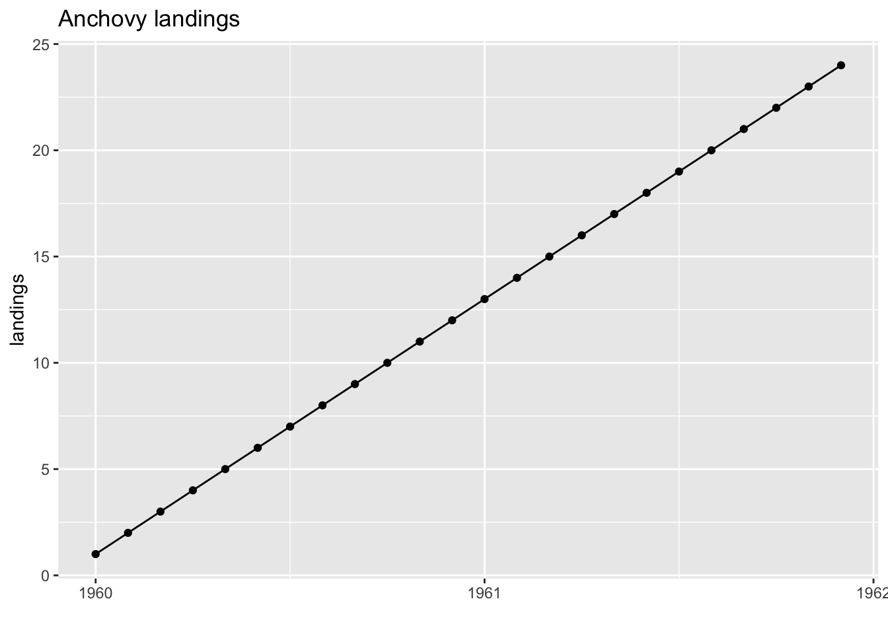
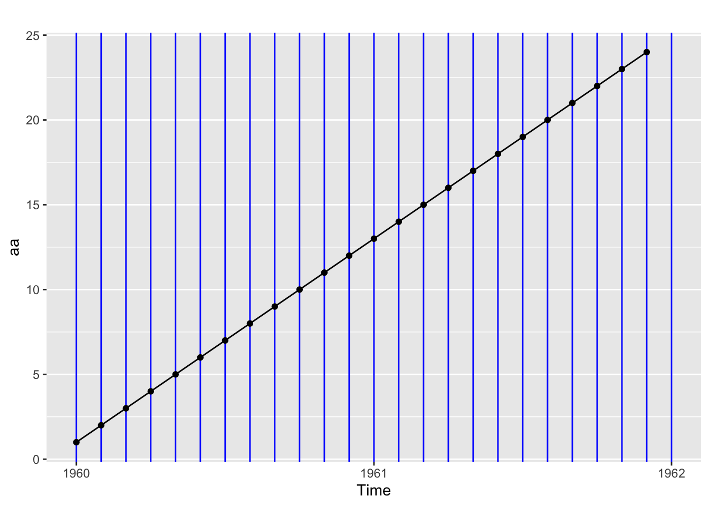

1.3 ts objects
A ts object in R is a time series, univariate or multivariate, that has information on the major time step value (e.g. year) and the period of the minor time step, if any. For example, if your data are monthly then the major time step is year, the minor time step is month and the period is 12 (12 months a year). If you have daily data collected hourly then you major time step is day, minor time step is hour and period is 24 (24 hours per day). If you have yearly data collected yearly, your major time step is year, your minor time step is also year, and the period is 1 (1 year per year). You cannot have multiple minor time steps, for example monthly data collected hourly with daily and hourly periods specified.
The data in a ts object cannot have any missing time steps. For example, if your data were in a data frame with a column for year, you could have a missing year, say no row for year 1988, and the data sense would still ‘make sense’. The data in a ts object cannot have any missing ‘rows’. If there is no data for a particular year or year/month (if your data are monthly), then that data point must be entered as a NA. You do not need a time step (e.g. year/month) column(s) for a ts object. You only need the starting major time step and the starting minor time step (if not 1) and the period. All the time values from each data point can be computed from those 2 pieces of information if there are no gaps in your time series. Missing data are fine; they just have to be entered with a NA.
All the non-seasonal examples shown will work on a plain vector of numbers, and it it is not necessary to convert a non-seasonal time series into a ts object. That said, if you do not convert to a ts object, you will miss out on all the plotting and subsetting functions that are written for ts objects. Also when you do multivariate regression with covariates, having your data and covariates stored as a ts object will make regressing against lagged covariates (covariate values in the past) easier.
1.3.1 ts() function
To convert a vector of numbers to a ts object, we use the ts() function.
ts(data = NA, start = 1, end = numeric(), frequency = 1)start is a two number vector with the first major time step and the first minor time step. If you only pass in one number, then it will use 1 (first minor time step) as the 2nd number in start. end is specified in exactly the same way and you only need to specified start or end, not both. frequency is the number of minor time steps per major time step. If you do not pass this in, it will assume that frequency=1, i.e. no periods or season in your data.
If you specify frequency=4, it will assume that the period is quarterly. If you specify that frequency=12, it will assume that period is monthly. This just affects the labeling of the minor time step columns and will print your data with 4 or 12 columns. For other frequencies, the data will not be printed with columns for the minor time steps, but the information is there and plotting will use the major steps.
Examples
Quarterly data
aa <- ts(1:24, start=c(1960,1), frequency=4)
aa## Qtr1 Qtr2 Qtr3 Qtr4
## 1960 1 2 3 4
## 1961 5 6 7 8
## 1962 9 10 11 12
## 1963 13 14 15 16
## 1964 17 18 19 20
## 1965 21 22 23 24plot(aa, type="p")Monthly data
aa <- ts(1:24, start=c(1960,1), frequency=12)
aa## Jan Feb Mar Apr May Jun Jul Aug Sep Oct Nov Dec
## 1960 1 2 3 4 5 6 7 8 9 10 11 12
## 1961 13 14 15 16 17 18 19 20 21 22 23 24plot(aa, type="p")Biennial data
aa <- ts(1:24, start=c(1960,1), frequency=2)
aa## Time Series:
## Start = c(1960, 1)
## End = c(1971, 2)
## Frequency = 2
## [1] 1 2 3 4 5 6 7 8 9 10 11 12 13 14 15 16 17 18 19 20 21 22 23
## [24] 24plot(aa, type="p")1.3.2 ggplot and ts objects
In some ways, plotting ts object is easy. Just use plot() or autoplot() and it takes care of the time axis. In other ways, it can be frustrating if you want to alter the defaults.
autoplot()
autoplot() is a ggplot of the ts object.
aa <- ts(1:24, start=c(1960,1), frequency=12)
autoplot(aa)  and you have access to the usual gglot functions.
and you have access to the usual gglot functions.
autoplot(aa) +
geom_point() +
ylab("landings") + xlab("") +
ggtitle("Anchovy landings") Adding minor tick marks in ggplot is tedious (google if you want that) but adding vertical lines at your minor ticks is easy.
aa <- ts(1:24, start=c(1960,1), frequency=12)
vline_breaks <- seq(1960, 1962, by=1/12)
autoplot(aa) +
geom_vline(xintercept = vline_breaks, color ="blue") +
geom_point() 
1.3.3 Plotting using a data frame
Often it is easier to work with a data frame (or a tibble) with columns for your major and minor time steps. That way you are not locked into whatever choices the plotting and printing functions use for ts objects. Many plotting functions work nicely with this type of data frame and you have full control over plotting and summarizing your data.
To plot the x-axis, we need to add a date column in date format. Knowing the right format to use for as.Date() will take some sleuthing on the internet. The default is 1960-12-31 so if you get stuff you can always write your date in that format and use the default. Here I use 1960Jan01 and specify the format for that. I have used the date_format() function in the scales package to help format the dates on the x-axis.
aa <- data.frame(
year=rep(1960:1961,each=12),
month = rep(month.abb,2),
val=1:24)
aa$date <- as.Date(paste0(aa$year,aa$month,"01"),"%Y%b%d")
ggplot(aa, aes(x=date, y=val)) + geom_point() +
scale_x_date(labels=scales::date_format("%b-%Y")) +
ylab("landings") + xlab("")